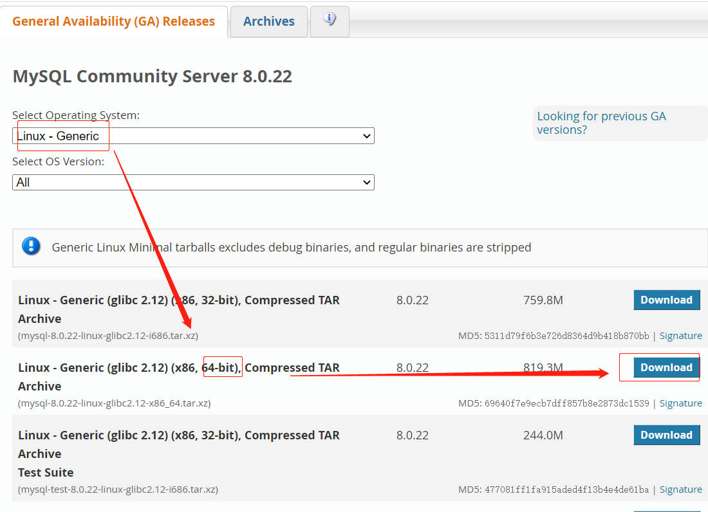
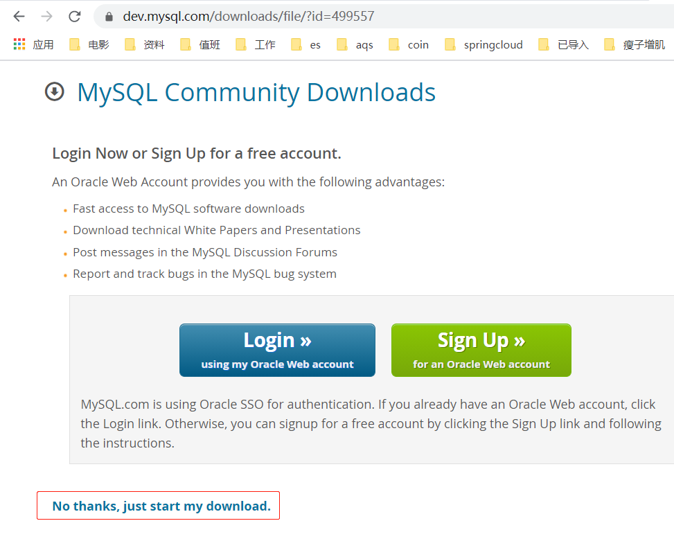
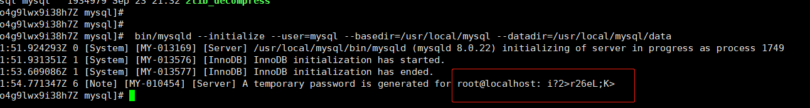
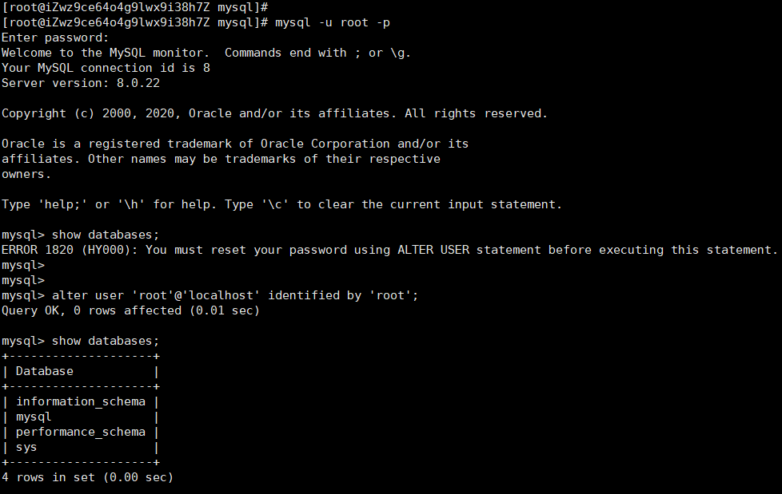

一、下载安装包
- 官网下载地址：https://dev.mysql.com/downloads/mysql/
- 我的是64位系统,点击
download然后进入到新的页面 - 在最下面选择
No thanks, just start my download.得到下载地址。如下图所示


命令行下载：
# 下载 |
二、MYSQL8配置
在上面解压就可以配置了。
1、创建mysql用户组与用户
# 查看用户列表 |
2、给用户授权
# 进入mysql的解压目录 |
3、初始化数据库
bin/mysqld --initialize --user=mysql --basedir=/usr/local/mysql --datadir=/usr/local/mysql/data |
不出意外是没有报错的，并且随机生成了root用户的密码，记得保存好，等会登陆需要，然后改密码。

这样之后还没完呢，继续如下。
3、配置my.cnf
- 在
/etc下新建一个my.cnf文件。命令：vim /etc/my.cnf。 - 然后编辑内容如下：
[mysqld] |
- 上面我修改了数据库编码为
utf8mb4。 - 并且修改了mysql8的默认密码加密方式为：
mysql_native_password。 - MYSQL8默认的加密方式是：
caching_sha2_password - 这里注意一点就是，这个更改的加密方式只对后来新增的用户有影响。
- 也就是说root用户还是用的
caching_sha2_password。后面有修改密码的方法。 - 根据自己的需求，加或者删配置。
三、配置服务
基本上都准备好了，在配置一下服务就可以使用了。命令如下：
1、配置本地环境
配置一下环境，vim /etc/profile，在最后添加如下：
export PATH=$PATH:/usr/local/mysql/bin:/usr/local/mysql/lib |
然后，保存退出。立即生效：source /etc/profile。
2、配置服务命令
#配置mysql服务开机自动启动拷贝启动文件到/etc/init.d/下并重命令为mysql |
这样mysql的服务就添加好了
3、MYSQL启动命令
上面配置好就可以启动了。
#mysql服务的启动/重启/停止 |
4、重置root用户密码
- 使用如上的命令
service mysql start，启动mysql. - 登陆到mysql控制台
mysql -u root -p |
- 然后输入上面的初始化数据库时生成的密码，如我的是：
i?2>r26eL;K>。 - 这个密码是随机生成的，你要输入你自己的。
- 当你第一次访问的时候，是需要修改密码的，不然就会报错，提示你重置密码。

alter user 'root'@'localhost' identified by 'root'; |
5、添加mysql用户
#mysql创建用户 |
6、修改密码
修改mysql用户的密码。
5.7版本之前的
mysql> update user set password=password("新密码") where user="root"; |
5.7版本之后的
# 方法1 |
这样就结束了，可以玩了。